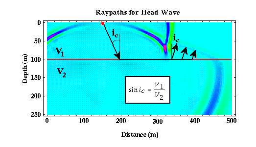

Head Waves
In the previous example, we discovered that if a low-velocity layer overlies a higher velocity halfspace that in addition to the direct and reflected arrivals, we also observe what is called a head wave. In refraction seismic surveying, we measure the earliest times of arrival of the seismic waves at various distances from the source. For the layer over a halfspace model, this earliest arriving energy could be associated with either the direct wave or the head wave.
Computing the time of arrival of the direct wave is relatively simple. It is nothing more than the horizontal distance between the source and the receiver divided by the speed at which the wave propagates in the layer. To compute the time of arrival of the head wave, we need to describe the path along which the head wave propagates. The path along which a wave travels is described mathematically by the wave's raypath. Snell's law provides the necessary mathematical framework for developing the raypath of our head wave.
Raypaths must be perpendicular to wavefronts. Thus, as shown in the figure below, we can sketch three raypaths from the boundary between the layer and the halfspace (red) and the wavefront describing the head wave. The angle between each of these raypaths and a perpendicular to the boundary is given by ic.

Substituting ic for i1 into Snell's law and solving for i2, we find that i2 equals 90 degrees. That is, the ray describing the head wave does not penetrate into the halfspace, but rather propagates along the interface separating the layer and the halfspace. ic is called the critical angle, and it describes the angle that the incident raypath, i1, must assume for i2 to be equal to 90 degrees.
From this raypath description of the head wave, it looks as though energy propagates downward to the interface at the critical angle at a speed of v1 (speed of wave propagation in the layer), propagates horizontally along the interface at a speed of v2 (speed of wave propagation in the halfspace), and then is transmitted back up through the layer at the critical angle at a speed of v1.
Although the head wave must travel along a longer path than the direct arrival before it can be recorded at the Earth's surface, it travels along the bottom of the layer at a faster speed than the direct arrival. Therefore, as is apparent in the movie showing the head wave, it can be recorded prior to the time of arrival of the direct wave at certain distances.
Seismology
- Simple Earth Model: Low-Velocity Layer Over a Halfspacepg 11
- Head Wavespg 12
- Records of Ground Motionpg 13
- Travel-time Curves for a Simple Earth Modelpg 14
- First Arrivalspg 15
- Determining Earth Structure from Travel Timespg 16
- Derivation of Travel Time Equationspg 17
- High-Velocity Layer Over a Halfspace: Reprisepg 18
- Picking Times of Arrivalspg 25
- Wave Propagation with Multiple Horizontal Layerspg 26
- Travel Time Curves from Multiple Horizontalpg 27
- Hidden Layerspg 28
- Head Waves from a Dipping Layer: Shooting Down Dippg 29
- Head Waves from a Dipping Layer: Shooting Up Dippg 30
- A Field Procedure for Recognizing Dipping Bedspg 31
- Estimating Dips and Depths from Travelpg 32